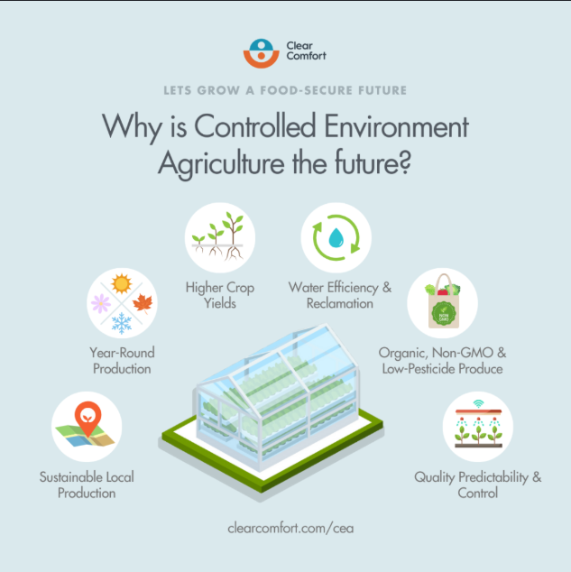
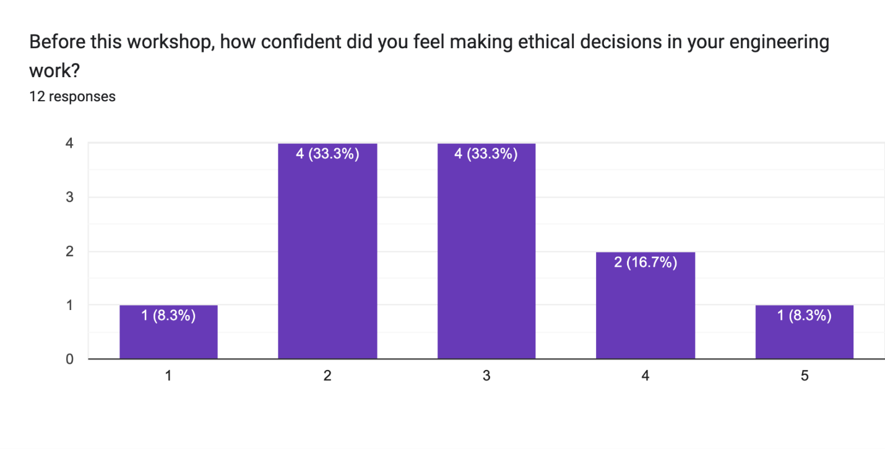
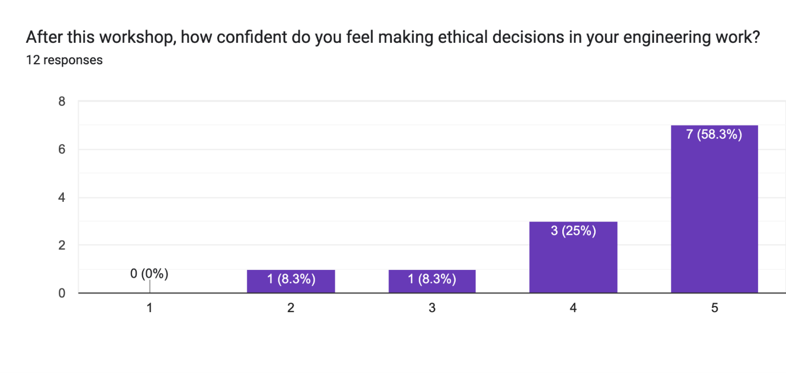
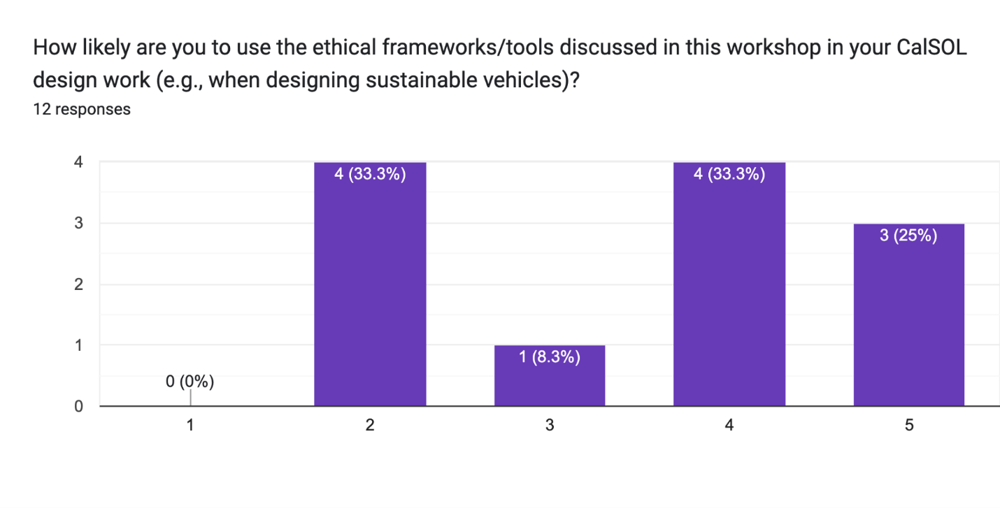
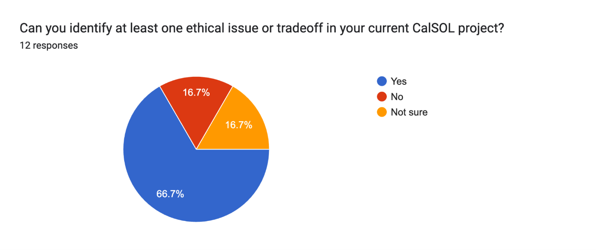

Ethics Portfolio
2026
- Explored the ethics and limits of quantifying risk.
- Examined how emerging technology reshapes society and food security.
- Studied engineers' responsibility for safety and sustainability.
Collaborators
Links / info

Table of Contents
Critical Review - On the Quantitative Definition of Risk
Analysis
In the paper "On the Quantitative Definition of Risk" by Stanley Kaplan, the author presents a new quantitative framework for risk. He uses mathematics and propositional logic to create a method of computing risk as a multidimensional function and claims that these functions can be compared to others to calculate the singular acceptable risk. In section 8, Kaplan defines the concept of acceptable vs. unacceptable risk. In his conclusions, he claims, “Risk must thus be considered always within a decision theory context”. Within this context, that risk is acceptable, which comes along with the optimum decision option; all other risks are unacceptable.
Kaplan utilizes a deductive argument based on the premise that risk is a quantifiable function. He provides evidence by showing that “risk curves” can be converted to scalar quantities using integration, allowing them to become linearly comparable and sorted in terms of worthiness. I would, however, challenge this view. Risk and reward are highly subjective, and removing emotion from personal risk removes too much information from the comparison. This prevents an individual from finding two arbitrary risks to be acceptable, making it an inhumane system for decision-making.
The argument is invalid because the claims are contradictory. Kaplan suggests his framework applies to all risks and yields an objectively correct option, yet he later cautions that reducing curves to a single number "inevitably involves a great loss of information." This contradicts the assumption that emotion and experience are not factors. For example, if there are two treatments available to a patient, one with a higher success rate but worse side effects, versus a lower success rate with no side effects, one or both may be acceptable when extending beyond quantifiable risk to a patient's values and lived experience. Neglecting that multiple option may be acceptable to an individual, which undermines the framework's logic. While there is sense to this model within the context of nuclear power, projecting it to all contexts is extreme.
Reflection
This was an interesting paper to read, as I had never thought about how risk could be quantified through linear algebra and multivariable calculus. The author questions the use of emotion and experience in risk assessment; however, decision-making is an inherently emotional process, and I am against the removal of humanity from the equation. As someone who is interested in pursuing a career in music, the search for the correct tone or feel of an instrument is a very qualitative and personal process. You cannot pick an instrument strictly based on which has the best specifications, wood, or components. These arguments strongly contradict the philosophy of my intended industry, where the "optimum" choice is defined by feeling in addition to a scalar quantity.
Civic Engagement Project Proposal Outline
Purpose & Motivation
CalSOL members are practicing engineers making real design decisions (safety tradeoffs, battery/material choices, team coordination) but likely have no formal ethics training.
Engineering ethics is directly applicable: risk and safety in vehicle design, sustainability obligations, and the problem of many hands in a large team project.
Connects to van de Poel Ch. 10 (engineers have a special responsibility re: sustainability given their technical expertise) and Ch. 9 (problem of many hands in team projects)
Audience & Users -Lachlan
CalSOL members: undergrad engineering students building solar-powered race cars.
Lachlan is a member, gives us an inn, makes it credible and tailored.
They're engineers-in-training already navigating real ethical terrain without frameworks to name it.
Deliverables & Implementation Plan
1-hour interactive workshop delivered to CalSOL (10+ members)
Workshop materials: slide deck + 1-2 short case studies drawn from solar/EV vehicle engineering (e.g., battery safety tradeoffs, lifecycle of solar panels)
Sarah and Tiana develop materials; Lachlan coordinates with the club and facilitates; Leah helps design case studies and frames the ethics content.
Steps: (1) Lachlan secures a meeting slot, (2) group develops materials, (3) deliver workshop, (4) collect brief feedback form
Outcomes of Success
Attendees can identify at least one ethical issue in their own project work after the workshop.
Framed through virtue ethics: success = CalSOL members leaving with a disposition to ask ethical questions as part of their engineering practice, not just as a box to check
Also, a utilitarian component: if even a few members apply these frameworks to real decisions, that's tangible benefit
Measured via short post-workshop survey (3-5 questions)
Civic Engagement Project Write Up
Purpose and Motivation
Currently, undergraduate engineering students at UC Berkeley have little to nonformal training in engineering ethics. This is especially true for CalSOL, which is UC Berkeley’s solar car team. Members of CalSOL are actively involved in building engineering systems, which comes with design decisions such as safety/economic tradeoffs and expectations. However, they are probably not thinking about those decisions through an ethics lens. Van de Poel and Royakkers argue that engineers have a social responsibility toward sustainability given their technical expertise. As such, we think that a workshop focusing on engineering ethics guidelines and sustainability ethics are important. Large team projects in CalSOL also make individual ethical responsibility hard to define. Therefore, we will also touch on responsibility distribution in our workshop. Our ultimate goal is to give CalSOL members practical tools to reflect on the ethical dimensions of what they are already doing.
Audience and Users
The presentation is going to be given to a group of representatives from different sub teams with the club CalSOL, which is Berkeley’s solar car racing team. CalSOL is made up of a diverse group of students from across different majors, though largely housed within the College of Engineering. The project is an inspiring fusion between clean energy, transportation, and automotive technology. We are excited to get a group of people together to discuss how the work being done in that club, with regards to clean energy vehicles, can be applied to the industries that many of us will go on to work in.
One of our group members, Lachlan, is a member of CalSOL and will act as the liaison for the club, coordinating the seminar. We are looking forward to getting this group together to present the state of affairs when it comes to carbon-neutral transportation, as well as where we aspire to be. Then, discuss this with the group and talk from a variety of perspectives about how we can think through all the ethical issues to make the path from the status quo to a cleaner, more sustainable transportation future as ethically responsible as possible.
Deliverables and Implementation Plan
The final deliverable will be a 1-hour workshop at CalSOL, a UC Berkeley student club that builds and races solar-powered vehicles to promote clean energy. We’ll use a slide deck and one or two short case studies drawn from real solar/EV vehicle engineering scenarios.
The main things we need to do are:
(1) Lachlan needs to get a meeting with the people in charge of CalSOL. He will do this within the next two weeks.
(2) Our group will work together to make the content for the workshop. Sarah and Tiana will be in charge of making the slides look good. Leah will make sure the ethics part of the workshop is good.
(3) Then we will schedule the time to do the workshop at CalSOL. Lachlan will be the person who talks to me because he already knows the people.
(4) At the end of the workshop we will give the people a form to fill out so we can get their feedback.
For the final write-up, we will include the slide deck, 2 case studies, as well as any further questions from students, and the feedback we collected after the workshop.
Outcomes of Success
Our criteria for success will be defined through virtue ethics, where we aim not to just give the engineers rules to follow, but rather reframe their thinking process while designing sustainable vehicles to include ethical considerations. We think virtue ethics is the best mode to define success for this workshop because our main goal is to simply get the members of CalSOL actively thinking about ethics in their work. To determine if our workshop had the desired effect of instilling a sense of ethical responsibility and awareness in engineering decisions for the members of CalSOL, we will make a short post-workshop survey with 3-5 questions asking members to rate the ethical tools/frameworks they gained in the workshop based on how likely they are to implement them into their design process and how confident they feel about making ethical decisions in their work after the workshop compared to before. Our success will be measured by how likely the members report they are to use the ethical frameworks, and how highly they rate their overall confidence about ethical decision-making as compared to before. As long as over 70% of members who attended report, they are at least somewhat likely to use what they learned in the workshop, and at least somewhat more confident in their ethical decision-making, the workshop will be a success.
Group Contributions
Leah: help with ethics framing, give the presentation and help facilitate discussion, make post-workshop survey.
Lachlan: slide design, club liaison, scheduling, insider knowledge of CalSOL's current projects
Sarah: slide design and planning the presentation.
Tiana: write seed questions and lead discussion.
Civic Engagement Project Reflection
Purpose and Motivation
Currently, undergraduate engineering students at UC Berkeley have little to nonformal training in engineering ethics. This is especially true for CalSOL, which is UC Berkeley’s solar car team. Members of CalSOL are actively involved in building engineering systems, which comes with design decisions such as safety/economic tradeoffs and expectations. However, they are probably not thinking about those decisions through an ethics lens. Van de Poel and Royakkers argue that engineers have a social responsibility toward sustainability given their technical expertise. As such, we think that a workshop focusing on engineering ethics guidelines and sustainability ethics are important. Large team projects in CalSOL also make individual ethical responsibility hard to define. Therefore, we will also touch on responsibility distribution in our workshop. Our ultimate goal is to give CalSOL members practical tools to reflect on the ethical dimensions of what they are already doing.
Audience and Users
The presentation is going to be given to a group of representatives from different sub teams with the club CalSOL, which is Berkeley’s solar car racing team. CalSOL is made up of a diverse group of students from across different majors, though largely housed within the College of Engineering. The project is an inspiring fusion between clean energy, transportation, and automotive technology. We are excited to get a group of people together to discuss how the work being done in that club, with regards to clean energy vehicles, can be applied to the industries that many of us will go on to work in.
One of our group members, Lachlan, is a member of CalSOL and will act as the liaison for the club, coordinating the seminar. We are looking forward to getting this group together to present the state of affairs when it comes to carbon-neutral transportation, as well as where we aspire to be. Then, discuss this with the group and talk from a variety of perspectives about how we can think through all the ethical issues to make the path from the status quo to a cleaner, more sustainable transportation future as ethically responsible as possible.
Deliverables and Implementation Plan
The final deliverable will be a 1-hour workshop at CalSOL, a UC Berkeley student club that builds and races solar-powered vehicles to promote clean energy. We’ll use a slide deck and one or two short case studies drawn from real solar/EV vehicle engineering scenarios.
The main things we need to do are:
(1) Lachlan needs to get a meeting with the people in charge of CalSOL. He will do this within the next two weeks.
(2) Our group will work together to make the content for the workshop. Sarah and Tiana will be in charge of making the slides look good. Leah will make sure the ethics part of the workshop is good.
(3) Then we will schedule the time to do the workshop at CalSOL. Lachlan will be the person who talks to me because he already knows the people.
(4) At the end of the workshop we will give the people a form to fill out so we can get their feedback.
For the final write-up, we will include the slide deck, our analysis and reflection, as well as any further questions from students, and the feedback we collected after the workshop.
Outcomes of Success
Our criteria for success will be defined through virtue ethics, where we aim not to just give the engineers rules to follow, but rather reframe their thinking process while designing sustainable vehicles to include ethical considerations. We think virtue ethics is the best mode to define success for this workshop because our main goal is to simply get the members of CalSOL actively thinking about ethics in their work. To determine if our workshop had the desired effect of instilling a sense of ethical responsibility and awareness in engineering decisions for the members of CalSOL, we will make a short post-workshop survey with 3-5 questions asking members to rate the ethical tools/frameworks they gained in the workshop based on how likely they are to implement them into their design process and how confident they feel about making ethical decisions in their work after the workshop compared to before. Our success will be measured by how likely the members report they are to use the ethical frameworks, and how highly they rate their overall confidence about ethical decision-making as compared to before. As long as over 70% of members who attended report, they are at least somewhat likely to use what they learned in the workshop, and at least somewhat more confident in their ethical decision-making, the workshop will be a success.
Group Contributions
Leah: help with ethics framing, give the presentation and help facilitate discussion, make post-workshop survey.
Lachlan: slide design, club liaison, scheduling, insider knowledge of CalSOL's current projects
Sarah: slide design and planning the presentation.
Tiana: write seed questions and lead discussion.
Analysis of what you learned from the experience
This project offered a meaningful opportunity to apply abstract ethical frameworks to a concrete, real-world engineering context. One of the most significant takeaways was understanding the gap between possessing knowledge of ethical theory and actually facilitating productive ethical reasoning in others. Writing seed questions and leading discussion required translating concepts such as virtue ethics and the problem of many hands into language and scenarios that resonated with an audience of practicing engineers who had no prior formal ethics training. This process reinforced that ethical frameworks are most effective not when they are presented as prescriptive rules, but when they are introduced in ways that invite reflection on decisions participants are already making. Additionally, facilitating live discussion revealed how different engineers engage with ethical questions depending on their role within a team. It is dynamic that classroom study alone does not fully capture. Overall, the workshop deepened my understanding of how ethics education must be tailored to its audience in order to produce genuine shifts in perspective rather than surface-level compliance.
Reflection on the impact of your project on the intended audience
75% of respondents to our post-workshop survey reported an increase in confidence in ethical decision-making as compared to before our workshop, 58% said they were at least somewhat likely to use the ethical frameworks discussed in the workshop in their CalSOL design work, and 67% said they could identify at least one ethical issue or tradeoff in their current CalSOL project. Some of these metrics fall short of our 70% goal for success, but we still consider the workshop a success since we increased the number of engineers on CalSol that are thinking about engineering through an ethical lens overall.
`




slides: https://docs.google.com/presentation/d/16cGxUE9JAfuF-AxbGveWa0jD2uVZ0UsoBqdhBiQ-NmI/edit?usp=sharing
survey: https://docs.google.com/forms/d/1rvXdzVQtJTCru3HHZ1Ht61f-iUdqVVE4lEZGCIkmL70/edit
survey result: https://docs.google.com/spreadsheets/d/1RkVB82Mg901akDYVkmkNQZQ_WdRUoyCBvcOf8PyNvPk/edit?gid=380220041#gid=380220041
Project Personal Reflection
I learned a lot of things through this project, and I would love to take a moment to acknowledge some of them. My group’s presentation was on sustainable and environmentally conscious transportation. We hosted a seminar style discussion which members of the student club CalSol which designs and builds functional solar cars. In our presentation we talked about the status quo and our goals when it comes to sustainability in transportation. Then we broke into discussion where we reviewed emerging technologies in this field and applied the ethical frameworks we discussed to the problem. In doing research for the presentation I found out about many new technologies and had the pleasure of sharing them and my thoughts with the group. Additionally, it was interesting to get some insight into some ethical roadblocks that can come up when developing new technologies and evaluating if it was worthwhile time-complexity investment. New technologies clearly have many foreseeable and unforeseeable ethical implications, and this project gave me more insight into the nuance of this field. I feel like our group worked well together, we were able to meet up outside of class and delegate the responsibilities to have an even split of work amongst the group.
Ethics in News Author
Article:
https://www.nature.com/article/s44383-025-00006-4
Introduction
This article discusses a new form of agricultural practice called controlled environment agriculture or CEA. CEA is an emerging technology currently being researched across multiple universities in the United States, including UC Berkeley. The goal is to make a system whereby the amount of food grows per area, and to protect it from external factors like climate change or severe weather.
While this technology is currently being developed in the US it could have an incredible impact on regions that struggle with food insecurity. Allowing crops to be grown in almost any climate. However, it could redefine how we practice agriculture in the United States, making traditional farming obsolete.
Author and publisher perspective and credibility
The article is written by several professors and researchers from different.
universities across the US. One of which is Professor Adam Arkin, a professor of Bioengineering at UC Berkeley. Professor Arkin research systems and synthetic biology with the Arkin laboratory through the Berkeley National Laboratory. In addition to the main topic of Controlled Environment Agriculture (CEA), the article talks about climate change and the business level effect of implementation. The article was published on Nature.com, linked to nature magazine which is long standing source of reliable scientific information.
The article is written from a very academic point of view and is targeted more towards people in academia, or with experience in higher education. Additionally, the author furthers this with his push for innovation to further his research in this topic, which defines the tone of this article.
Technology Description
The technology discussed in this article is Controlled Environment Agriculture or CEA. CEA is a method of farming currently being researched by academics and companies across the country. The key idea is to have very dense and often multi-tier farms in an enclosed environment. The goal is to generate the precise climate a crop needs to grow optimally, which protects crops from external factors such as heavy rain/wind, pests, and climate change. This effect is achieved by using sensors and climate control devices to control the temperature, humidity, light, ph.etc.
CEA is built upon a long standing tradition of climate control technology; AC units and heathers are common in many houses across the country, shutters and LED’s can control or add artificial light for plants similar, to blinds and lights in our own homes, and (de)humidifiers are also common in many homes in areas with more extreme climates. While CEA uses these same concepts and devices, the idea of applying it to indoor agriculture is where it can become groundbreaking.
This technology involves many different disciplines of engineering, civil and structural engineers design the facilities, while mechanical and electrical engineers handle the climate control systems and bioengineers analyze and modify the crops.
Link to Class Concepts
This case connects to several of the concepts discussed in this class:
Who is responsible for innovation and for the impact of that innovation?
Increase is machine use and reduction of human labor.
Risk vs. benefit analysis, and balancing innovation with the reality that this technology isn’t viable yet.
Communication between engineers and the public about how this technology impacts food.
This case is a great example of how we should dig deeper into which technology we choose to innovate and how we should use our resources.
As an example of one of the ethical frameworks we learned in this class, this topic relates heavily to FERE 3 and the responsibility of engineers to communicate harm and risk with the public. While CEA is designed to protect crops from the elements and pests, making organically grown food more accessible. The use of GMOs and lack and genetic diversity could have unknown effects in the long term and should be studied.
Ethical dilemmas
Here are some ethics questions for this case:
Efficiency: While indoor farms can produce far higher yield per area than traditional farms, they are far less energy efficient. This energy efficiency deficit could drive up prices for consumers and remove relationships with farmers which is against the idea of care ethics. Is it wrong to further buy out smaller agricultural entities?
Genetic Modification: There is still limited research on the effects of genetic modification of plants and the long-term effects of genetic modification. Given that there are unknown risks and consequences, is it an acceptable risk to genetically modify the plants?
Climate factors: One of the primary motivations for developing this technology is to protect crops against climate change. The change in average temperatures has placed stress on some of our crops, and CEA is designed to combat this. However, these farms have a higher carbon footprint than traditional ones. Is it ironic that a solution to protect crops from climate change contributes to climate change?
Contamination: CEA facilities are designed to recirculate water around the facility to increase efficiency. However, because of this closed system if some sort of pathogen enters, it can quickly spread throughout the entire crop and cause a total loss. Is it ethical to risk the entire crop to increase efficiency and yield?
Perspectives:
From an agrarian’s perspective, this technology may pose a threat to their career and their way of life by condensing and/or automating agriculture. While CEA farms still require a human presence, they are less labor intensive than traditional farms.
From a civilian’s perspective this technology allows crops to be grown in a wider variety of climates, shortening supply chains and food waste. However, while it saves energy on transportation it uses more to regulate the climate.
From an engineer’s perspective this opens many new opportunities for research and development that can be used to create a more reliable food network for society. It is an exciting project in almost every discipline of engineering.
Seed Questions
Can CEA solve food insecurity, or does it just create more problems?
When do the environmental costs of CEA outweigh its benefits in yield and consistency?
CEA is supposed to protect crops from climate change; however, it has a higher carbon footprint than traditional agriculture is it too ironic that it contributes to the issue it attempts to solve.
If two grocery store items were priced the same, however one was grown in a field, and the other in a CEA environment, if you had to choose to purchase one of those. Which would you prefer?
How much control over plant growth is too much, especially when it comes to genetically modified plants.
Would country scale adoption of CEA reduce or increase the inequality in food access in America? Elsewhere?
How should engineers weigh innovation against reality when technologies are not yet economically viable?
Response to Group Feedback
The points brought up in our discussion were as follows:
Target audience may not be able to afford or understand the technology initially and may be more viable in less developed countries.
This was a good point brought up in the discussion, pointing out that while the United States is developing this technology it would be most beneficial in other countries. Specifically, where food insecurity is an issue or the climate is not as well suited to commercialized agriculture, due to extreme heat, rain, or natural disasters.
Technology is not yet viable and requires substantial research.
This is a valid point because while CEA shows substantial promise it is not yet commercially viable or scalable. Right now, CEA is still more energy intensive that traditional agriculture and the startup cost is far too heavy to justify its implementation in the United States. However, with further development this technology may become more viable.
CEA could out local farmers and lead to agricultural monopoly.
If CEA were to be implemented in the US, it would threaten the rest of the agriculture industry by putting thousands of farmers and farm workers out of their jobs, and CEA is patented it could monopolize the industry, which would allow them to set prices for the whole industry. However, making organic food more accessible, cheaper, and reducing food insecurity could be worth the loss in jobs.
CEA would have non terrestrial applications, where controlled environments are essential for life.
This is something I didn’t even consider when writing this analysis, but further development of this technology could make space travel more viable, especially where it comes to settlement. Since the idea is to make the indoors a habitable environment.
Response to Analysis
I appreciate the feedback I received from the review and the discussion group. I’ve returned to each of the sections in my analysis and improved them using that feedback to strengthen my analysis.
Author credibility, I split up this section into two paragraphs, one to describe the credibility of the author and publisher, and the other to describe the tone and potential bias as suggested.
For Engineering Elements I took the feedback I received and connected this technology to current technologies we have exposure to in order to give a clearer understanding of how CEA works.
For Ethical Dilemmas I added a section called Link to Class Concepts where I discussed some topics from this class, and how they connect to this case. I specifically reference FERE 3 and the responsibility engineers have to communicate dangers with consumers and the public.
For the Seed Questions I went back added a hypothetical scenario we used in the discussion in order to make the discussion more engaging for the group and to get people thinking about this topic.
Conclusion
This technology shows substantial promise and has the potential to revolutionize how we practice agriculture. Shortening food chains, therefore reducing transportation energy and making organically grown food more abundant and accessible could have a great impact on food quality in our country. While exporting this technology could help reduce food insecurity in other parts of the world.
While there are some tradeoffs and ethical dilemmas when it comes to this new technology, the potential benefits outweigh the risks and costs of this technology. However, this is case is a good example of how engineering decisions can go beyond the technical and become a moral and ethical debate.
While significant development of this technology is necessary it shows substantial promise and a solution to global food scarcity. It deserves more research and development, and I look forward to seeing the results.
Ethics in News Review
Author: Alaap Nair
Title: AI Companions: The Good, The Bad, and The Frightening
Article Selection:
Engineering Content: Artificial Intelligence is inherently connected to engineering. Even if this article is from a more philosophical/psychological standpoint, the subject matter is by nature related to engineering.
Currency of News: This article was published July 21, 2025, so the material is still quite up to date and relevant.
Author and Publication Venue: This article was published in The New Yorker, a multiplatform magazine. The author is Paul Bloom, a renowned psychologist and professor emeritus of Yale University. Since this article is from a psychologist’s perspective, it is far more qualitative and less technical with regard to AI.
Relevancy: AI companions have been a hot topic in the media and are simultaneously being developed and investigated. While the article proposes that they may have benefits for some people. The concern is that the ease of comfort and validation may pose a threat to the younger generation.
Title and Author: The author is definitely well-versed in psychology, but this article’s title felt misleading since it focused more on the concept of loneliness than on the use of AI to cure it.
Originality of Topic: AI companions have not yet been brought up in our discussion.
Analysis:
Perspective of the Author and Publication: The information in the article seems accurate, even if largely qualitative. The article seems relatively unbiased and aims to give a clear overview of the topic.
Engineering Elements Included: Alaap explains how this technology is still being developed and how these chatbots / AI companions seek to provide “empathy” no matter what.
Ethical Analysis: The main ethical dilemma with this topic comes down to who the intended user is. Bloom correctly explains that there are some well-intentioned uses for this technology to provide some interaction to patients with disabilities. However, I believe that in the hands of young people this technology could.
Engaging in Discussion: The seed questions seem good, and it should be a good discussion. However, it could be interesting to think of a hypothetical scenario to go over since impacts on mental health are mentioned in the analysis.
Review of the Ethics in News Revised Analysis
Author: Alaap Nair
Title: AI Companions: The Good, The Bad, and The Frightening
Article Selection
Alaap is right when he says this article is important and relevant because people are working on AI companions now. I also think it is still current and worthy of discussion even though this article is from more of a philosophy and psychology perspective it is still related to engineering. The New Yorker is a credible source and Paul Bloom is a professor emeritus at Yale so that makes the article more believable, and the fact that the article was published recently shows the immediate consequences of this technology. To further support this, we could apply the concept of utilitarianism where the benefits outweigh the projected harms. I do feel like the title of the article is a little misleading because it is more about loneliness than about using AI to fix it.
Engineering Elements
This technology is still very much developing, has strong ties to engineering, as AI has frequently been in the news as of late. These AI companions are designed to be understanding and caring all the time, however, there have been reports of people becoming too attached to these companions, and then they cause serious emotional distress. I the author he had talked more about the engineering side of this, and how they are built. Hopefully in the future there can be technology transferring from a more developed country to a less developed country, because as of right now, this technology alongside most of AI is not largely accessible. Engineers cannot assume that the people around them have to adapt to their work, and it would be interesting to know how these companions are programmed to be so supportive and how that affects the people who use them in the long term. But sometimes these outcomes are due to the culture of the environment that can influence whether an engineer fulfills their ethical responsibilities or not and perhaps it’s not even the engineers who decide the companions should respond like they do.
Ethical Analysis
Alaap says the main problem is who is going to use this technology, as well as who it's designed for. Paul Bloom says it can be helpful for people with disabilities, and people who lack physical or cognitive abilities for social interactions. However, it could be bad for younger people who are still learning how to interact with others. He could have added the idea that if the projected harm exceeds some significant threshold of acceptability, it might be ethically right to limit its use. Alaap could have made this point stronger using Rawls' difference principle, which says it is not fair if some people get benefits and others get hurt. Some people get help from this technology; however it can have detrimental effects on others, which is a serious ethical dilemma. Because of this, engineers need to make sure that they design the technology for long term sustainability so that it serves people responsibly over time. This also raises the question of when engineers should speak up about these harms, for instance through remote anticipatory whistle blowing where a preventative action is taken long before the harm occurs, imminent anticipatory whistle blowing where prevention is made shortly before the harm, or even post facto whistle blowing where harm prevention occurs after the harm has already taken place. People are starting to call-out these companies for the harm caused by their AI companions, however it has not been the companies’ engineers, thus far.
Discussion Questions
Alaap does a great job of including different perspectives when discussing the article, but it could have been stronger if he clarified which groups hold each stance on the issue instead of saying "some people may believe…". This is important because it plays into the idea of designing new things for local cultural compatibility, so it's important to recognize differing viewpoints. The questions he asks are good, and he effectively facilitated the discussion and added a very informed view on the topic. It could have been interesting to discuss a hypothetical situation since the article talks about how this technology can affect people's mental health, as upstream learning tells us it is better to identify and prevent problems before they occur. There is also the issue of privacy protection when it comes to the sensitive personal data these companions collect from users. But overall, the discussion was lively and it was interesting to learn more about this topic as it is very relevant in the AI bubble.
Conclusion
Overall, I think Alaap did a good job of choosing a topic that we had not talked about before and bringing in a psychologist's viewpoint to add something new to our conversation about engineering ethics, while also avoiding idealization by not assuming this technology will always function as intended. I saw significant improvement from his initial submission; I can tell he took the discussion and feedback to heart. To make the review even better Alaap could have cited more engineering frameworks and ethical principles, keeping in mind the codes of engineering ethics and how society must take priority when it conflicts with private interests. An engineer in this space should also be aware of conditional responsibility since blame can sometimes be shared across entire organizations and should keep in mind the four FEREs of not creating harm, preventing harm, communicating harm, and serving a client's needs. But overall, I still have very little to nitpick from this revised review, only small criticisms of a thoughtful and well-organized review.
Final Reflection - Lachlan Watts
In this Ethics course I learned a lot about ethics and ethical frameworks including the main idea of the relationship between ethics, engineering, society, and us as individuals. It’s an engineer's societal role to create technology on behalf of society while working to diminish the negatives and harm as much as possible. An engineer's role in a company, however, only consists of creating new technology that serves a purpose, it does not have to benefit society. In industry this role changes because they create technology to make money, under capitalism. So, engineers have got to find a way to balance their responsibility to society against their responsibility to their employer.
We learned several concepts in class that helped me understand some nuance about this relationship. When starting the course, we covered Bateson's ecology and flexibility, we spoke of the flexibility of biological systems. We said that high civilization is one that can adapt and match its environment, and that it will harmonize with environmental systems to create a system they grow together irreplaceable resources are only used when there is no other alternative. This is important because it shows how engineers and society affect the environment, this relates to my EiN analysis on Controlled Environment Agriculture (CEA), where Berkeley researchers are trying to invent a climate that adapts to crops, but with the drawback that the higher carbon footprint of CEA made me wonder whether we are adapting to our environment or just creating more climate issues. In our EiN discussion group it was also very interesting to learn more about topics like social media algorithms and addiction, AI in hiring practices, robotics in manufacturing, and healthcare database management, from my peers all of which all showed how engineering and technology has immediate impacts on society and our culture
We then established some ethical frameworks to analyze engineering news and technology. Argumentation is used to justify or refute statements, which was the backbone of all our EiN discussions and reviews, it’s something I used in my CR on Kaplan's quantitative definition of risk, where I challenged his idea that risk can be reduced to a scalar quantity without losing humanity. One type of evaluation is utilitarianism, a kind of virtue ethics where the outcomes justify the means. Another example from class is normative argumentation which is about what should do instead of the status quo. We also discussed some very different tools to verify our arguments such as rhetorical analysis, which focuses on how a person conveys their message, versus logical analysis, which looks at the content to determine how valid their argument is. These tools help us identify fallacies, so we can evaluate the credibility of other’s claims and strengthen our own.
An engineer should focus on developing technologies that do not discriminate against certain groups of people, this was a big focus during our group discussions. I found these discussions to be a great way to evaluate technology, and its impacts from multiple perspectives. For my group, our EiN 3 on generative AI in the porn industry taught us that engineers must be responsible for the impact of their tech on users. EiN 4 on TikTok and youth screen addiction showed how upstream learning is critical, since identifying the harm of addictive algorithms before they affect millions of young people is far more responsible even than fixing the issue afterward. EiN 5 was on AI in drug discovery and raised serious concerns about black box systems making it hard to understand their methods, which connects to my CEA analysis where I felt under FERE 3 engineers/researchers have to communicate unknown risks to the public. EiN 6 on AI in hiring showed historical bias into their design, and EiN 7 on AI companions was the topic I reviewed, but idea that this technology could help people with disabilities but harms younger users made for a very involved discussion. EiN 8 on humanoid robotics, had some issues where people predicted the use of these robots in defense. EiN 9 on indoor agriculture, which I lead, talked about the environmental impact of agriculture, EiN 10 on AI in healthcare made me think deeper on equity concerns. Finally, EiN 11 on health data privacy bought up an imported topic in data security, which is very relevant after canvas getting hacked. My thoughts though are that AI is moving faster than our society and our ethics can. These discussions were eye-opening and sometimes unsettling since I don’t know much about AI at all, and while I have no interest in working on AI in industry and frankly don’t like the topic, understanding these issues feels essential.
These topics we discussed connect directly to the concept of technocracy which we discussed in this class, where engineers make all the decisions because they are the most informed when it comes to tech. But this excludes the voices of the communities being affected. They also connect to the four FEREs: 1. not causing harm, 2. preventing harm, 3. informing people of possible harm, and 4. serving the interests of our employers. This framework stood out to me and felt very applicable, it was something my group thought about a lot during the civic engagement project we did with CalSOL, UC Berkeley's solar vehicle racing team, where we hosted an EiN style discussion after a short presentation on sustainable transportation. It also brought up questions of Rawls' difference principle, given this technology will only be accessible to the few. Also thinking about AI companions and technology in our EiN discussions added more to this and served as a reminder that if the projected harm exceeds some significant threshold of acceptability, it might not be ethically right. I feel like this applies to a lot of companies currently thriving in the AI bubble, I worry about the environmental and data privacy concerns with these companies, and I would rather not contribute to it.
I do feel like I learned some valuable information and frameworks in this class and in order to practice the skills I have learned in this course I want to spend more time review technology news and discussing it with my peers, and not just engineers, because I want to hear thoughts from different perspectives. To sharpen my ethical antenna, I plan to spend more time reading news instead of scrolling on social media, because I have learned that society must take priority when it conflicts with private interest, so it is my responsibility to understand the needs/wants of society. Some resources I plan to use going forward include AP News, the Science and Engineering Ethics Journal, Ground News for general up to date knowledge on society, to continue taking graduate pedagogy / ethics class with Professor Hunn, continuing my involvement with CalSOL, and spending my summer developing tech to prevent wildfires. Overall ethics, engineering, society, and I as a student, an engineer, and a citizen are all intertwine. It is an engineer's responsibility to create technology that benefits society in some way, not just more junk or e-waste. But it must be done in an ethical way such that this development benefits society while avoiding harm as to the best of our ability.
References
Kaplan, Stanley. "On the Quantitative Definition of Risk." Risk Analysis, vol. 1, no. 1, 1981, pp. 11-27. Wiley Online Library, https://doi.org/10.1111/j.1539-6924.1981.tb01350.x.
Bloom, Paul. "AI Is About to Solve Loneliness. That's a Problem." The New Yorker, 21 July 2025, www.newyorker.com/magazine/2025/07/21/ai-is-about-to-solve-loneliness-thats-a-problem.
Wang, Liping, et al. "Finding Sustainable, Resilient, and Scalable Solutions for Future Indoor Agriculture." npj Science of Plants, vol. 1, article 5, 1 Sept. 2025, https://doi.org/10.1038/s44383-025-00006-4.